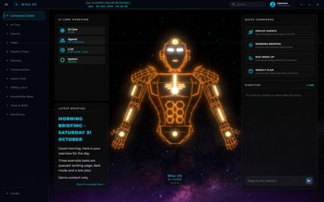
In progress
CHAMP OS + Agent Chat
Personal AI operating system: a fleet of agents on local models, plus a desktop chat app with an approval gate for risky actions.
ElectronNodePM2LM StudioThree.jsObsidian
All projects
Live means built and working (some run only on my own machines). Concept sites are unofficial and not commissioned. Where a write-up does not exist yet, the card says so.
Projects, the skill areas they use and where I learned them. Hover a node to see its links; click a project to open it.

Personal AI operating system: a fleet of agents on local models, plus a desktop chat app with an approval gate for risky actions.
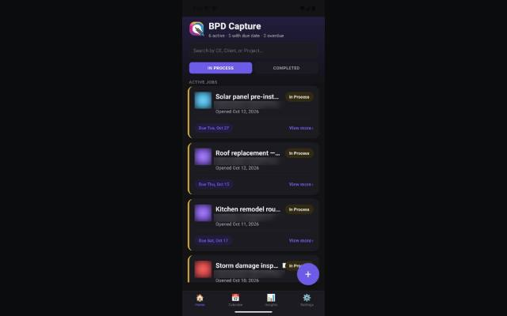
Offline job-documentation app for field work: photos, due dates and notes per job. Shown with dummy data only.

ZTM course project: classifies 120 dog breeds; best validation accuracy 78.1% with a frozen MobileNetV2 base.
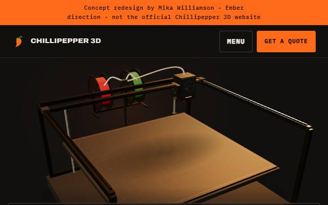
Three website directions for a filament supplier, with a printing-chilli idea in 3D.
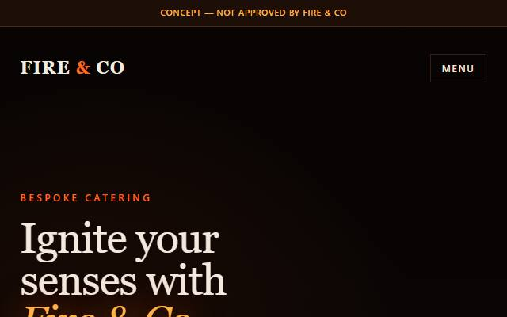
Three improvement directions (Ember, Harvest Table, Booking First) for a fire-and-smoke catering business.
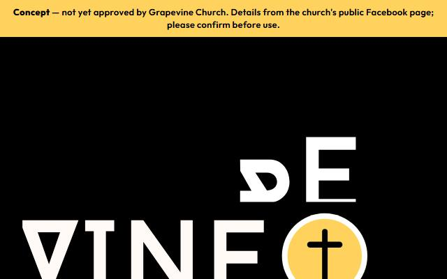
One church website concept with a skippable logo intro, a visit section and a demo form that sends nothing.
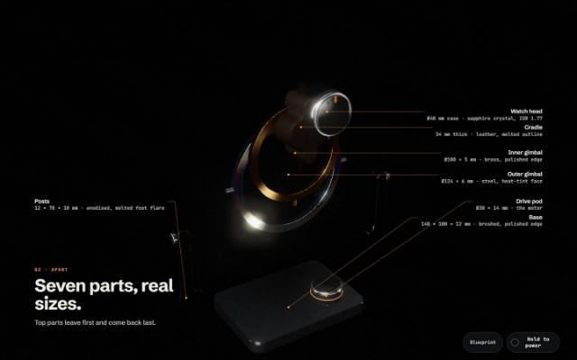
Scroll-driven 3D piece that takes a gyro watch winder apart, with materials that behave like the real ones.
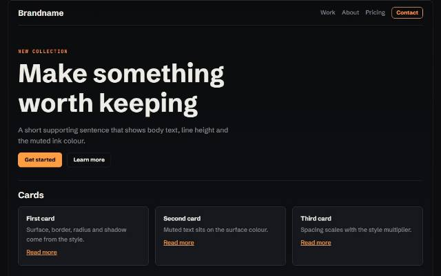
Local tool to mix palettes, fonts and styles with contrast checks; the Site Tuner adds motion and feature switches.
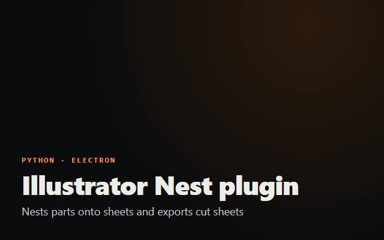
Nests parts onto sheets and exports cut sheets; engine tested on fictional files, Illustrator panel awaits real jobs.
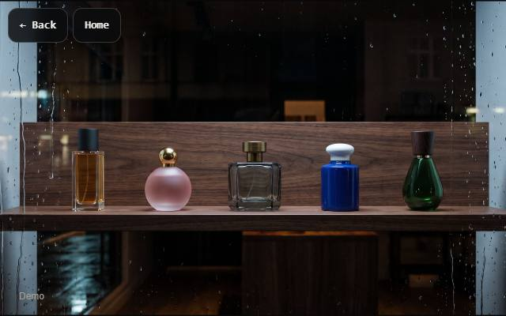
Interaction study inspired by Ascenta Studio's PLUIE concept; images AI-generated by Mika
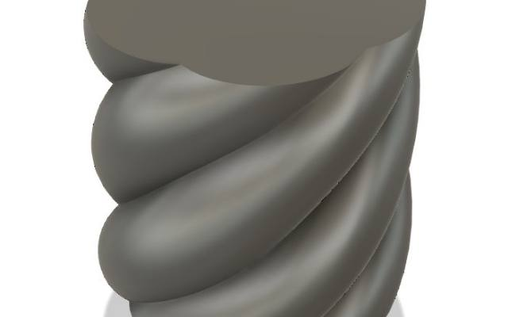
Directed an AI agent driving Fusion 360 to design a 3D-printable display plinth
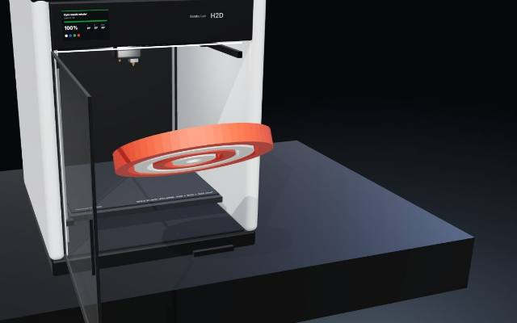
Rapid prototyping, reverse engineering and affordable custom manufacturing: tooling, moulds and hardware such as a gyro watch winder, jigs and brackets.
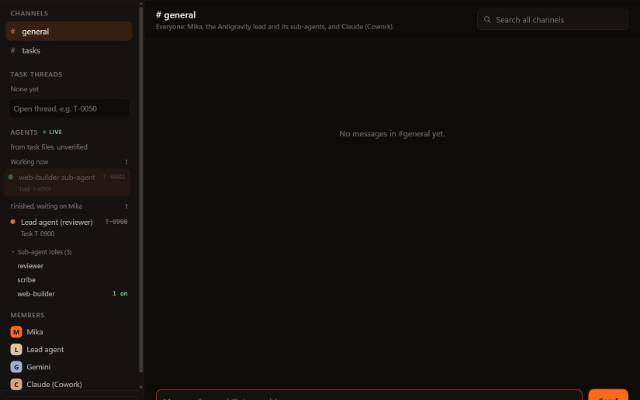
Chat with a local model: replies stream in with a Stop button, and the app only talks to local addresses. 13 unit and 33 end-to-end checks pass; not yet merged into my main build.
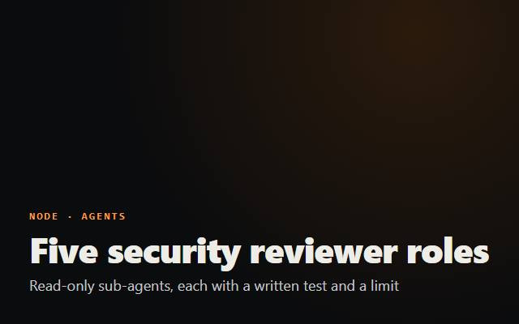
Read-only sub-agents for my agent team (SQL, AI-agent, Electron, dependency and web security). Each has a written test and a limit that says what it may never touch.
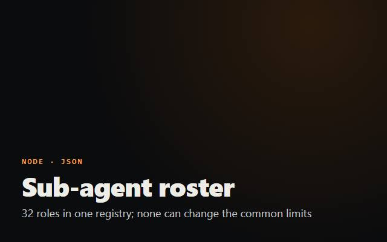
32 on-demand specialist roles in one registry (23 active, 9 proposed). No role can change the common limits: never publish, push, send, delete or contact anyone.
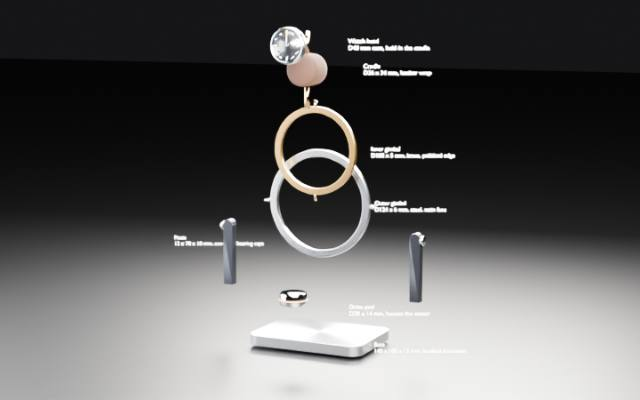
A manufacturing review of the gyro winder 3D model: a good visual concept that cannot be made as drawn, with four blockers, a bill of materials and a route per part.
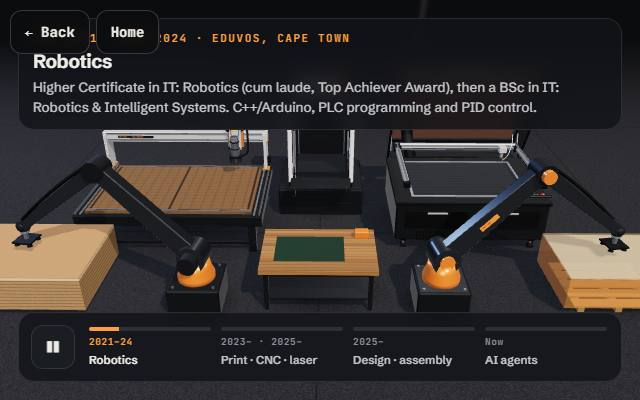
Interactive pieces behind the home-page hero: the career flow, a CNC router controller, a 3D print studio and a career graph.